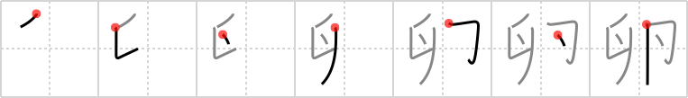

卵
← →
egg

Reading:
On-Yomi: ラン — Kun-Yomi: たまご
Heisig story:
Receipt . . . stamp . . . and a drop in each side to represent a little smear of egg yoke. The third stroke is drawn slightly higher to close the egg up tightly and keep the yoke inside.
Koohii stories:
1) [dingomick] 1-3-2007(207): The Easter Bunny dropped an egg on my desk and got yolk all over my receipts and stamps.
2) [radical_tyro] 1-7-2007(27): The Easter Bunny (hare) drops a few drops of egg yolk while hiding easter Eggs.
3) [Transtic] 11-2-2008(22): The Easter Bunny is hiding an easter EGG in each of its ears.
4) [Raichu] 5-3-2009(15): Sorry folks, but this looks like a pictogram of male private parts, with dots marking the egg-shaped bits.
5) [Medialis] 8-4-2010(12): Simple: Pictogram of the cracking of an egg. One half in each hand.